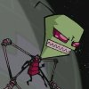
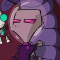
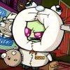
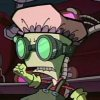
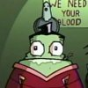
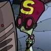
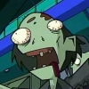
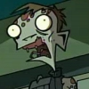

|
FEATURES
Screenshot Galleries
Transcripts
Cancelled
Episodes
Irken
Guide
ENCYCLOPEDIAS
A-Z Bios
Seating Charts
Planet
Guide
Alien
Species
Invaders
The Resisty
OTHER STUFF
Updates
Fan
Fiction/Art
Lizard Boy Shrine
Blotch Test (POS 2000)
Deleted Scenes
Links
THE MONKEY
Info
Games
Cursors
GUESTBOOK
View
Sign
E-mail

| |
|
Invader ZIM biographies
[1-9]
[A]
[B]
[C]
[D]
[E]
[F]
[G]
[H]
[I]
[J]
[K]
[L]
[M]
[N]
[O]
[P]
[Q]
[R]
[S]
[T]
[U]
[V]
[W]
[X]
[Y]
[Z]
[Stock Bios]
[Cancelled Bios] |
|
|
|
|
ZIM |
|
|
 |
Major Appearances:
Quote: "Fools! I am
Zim! Irken invader Zim? I am responsible for the safe obliteration
of the human race, not you!"
Affiliation:
The Irken Empire
See also: |
|
The title character of the
show, Zim is a short Irken defective. He thinks highly of himself
though and doesn't even notice that the rest of the Irken Empire
hates him. Zim single handedly messed up Almighty Tallest Red and
Purple's first attempt at galactic conquest, and was serving out his
banishment sentence on the planet Foodcourtia when the Tallest began
Operation Impending Doom II, a follow-up mission. Zim 'quit' and
immediately went to the Great Assigning to get his role for this
invasion, and after an argument with the Tallest he was given a
'secret mission' to Earth. The real reason was so Zim could be sent
as far away as possible. But Zim takes his mission very seriously,
and upon his arrival on Earth he disguised himself as a school child
and enrolled in the local Skool for information gathering. |
|





|
|
Zita |
|
|
|
Major Appearances:
Quote: "Aw, not this
again. You're crazy!"
Affiliation:
Skool- Ms Bitters' class
See also: |
|
See
Ms. Bitters'
seating charts, both season 1 and 2. |
|
Zombie Soldiers |
|
|
 |
Major Appearances:
FBI Warning of Doom
Quote: none
Affiliation:
Mall
See also: Sgt.
Shriver, Sgt. Slab Rankle |
|
Whenever someone breaks the
Mall rules, Sgt. Slab Rankle throws them into an underground pit.
With the addition of a zombie lab to the pit, Rankle now picks out
prisoners and converts them into horrible zombies. Rankle has an
army of useless zombies at his disposal if he ever feels the need to
unleash them, such as when ZIM escaped from the pit while turning in
a copy of "Intestines of War."
One of the zombies is dressed like a mall security guard. |
|

|
|
Zootch |
|
|
|
Major Appearances:
Dark Harvest -- The Wettening -- Gaz, Taster of Pork
Quote: "Arrg! My
organs!"
Affiliation:
Skool- Mr Elliot's class
See also: |
|
See
Mr. Elliots'
seating chart. |
|
Zootch alien |
|
|
|
Major Appearances:
Hobo 13
Quote: none
Affiliation: Space-
Hobo 13
See also: Nub
Bubbins alien, Skikkiks, Crystal, Sgt. Hobo 678, Zootch alien |
|
This trainee on Hobo 13 had
a slug body with the head of skool child Zootch. The Zootch alien
was eliminated from training when Zim threw a rock in his direction,
alerting some plant creatures to his presence. |
|
|